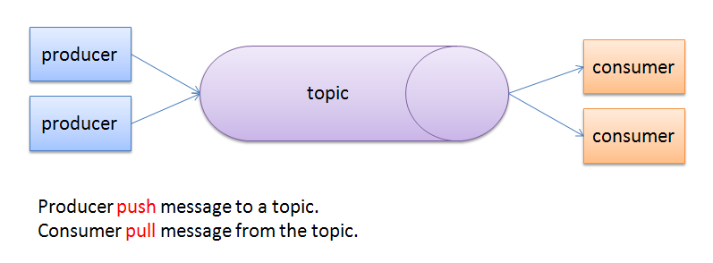

Kafka无消息丢失配置
今天这篇文章分享的主题是：Kafka无消息丢失配置，以及分析一些常见的消息丢失案例。
在这之前，我们需要清楚，Kafka丢失消息的几种场景。比如：producer生产者把消息写入topic中，broker端并没有接收到，消息在去的路上丢失了；broker端接收到了消息，但是consumer并没有消费到这条数据，消息在broker端丢失了；broker端接收到了消息，但是consumer消费者并没有消费到，消息在来的路上丢失了。
这几种场景其实就是Kafka架构决定的。

其次，我们也需要清楚，Kafka在什么情况下能保证消息不丢失。用胡夕老师的话总结：Kafka只对”已提交”的消息（commited message），做有限度的持久化保证。
“已提交”是表示，当Kafka的broker成功接收到了某条消息，写入到日志文件中，并且告诉producer生产者这条消息已经成功提交后，这条消息才算已提交。”有限度的持久化保证”意思是，Kafka不可能保证任何情况下做到不丢数据，比如，broker服务器全炸毁了，这种情况不可能做到不丢数据，但是如果消息保存在N个broker中，那么N个broker只要有一个存活，就可以保证消息不丢失。
所以理解了不丢失含义和丢失的场景后，我们分析下常见消息丢失的场景。
Producer生产者丢失数据
生产者丢失数据也是比较常见的场景，大多数是因为producer发送消息时API使用不合理造成的。Kafka producer默认是异步发送消息，大概流程是：初始化producer实例，创建sender现成负责发送消息->将消息暂存在缓冲区，消息根据topic-partition分类缓存->消息数量达到batch.size或时间达到linger.ms，sender线程将消息发送到topic-partition所在的broker。
因为是默认异步发送，也就是说如果调用的是producer.send(msg)，通常会立即返回，但是并不代表消息已经发送成功，只能代表消息暂存在了缓冲区。如果网络抖动（producer没有发送消息）、消息本身不合格（broker端拒绝接收）等都能导致消息丢失。
那么正常的做法是使用producer.send(msg,callback)，使用callback回调，能够告诉开发者消息是否真的提交成功，如果提交失败，也可以针对性处理。
1 | // 发送消息 |
使用带有回调的API能够解决producer发送的问题，但如果是broker的问题，导致消息发送不过去，那么就需要去调整broker端参数；当然，Kafka也可以同步发送消息，但是性能会很差。
batch.size是producer端参数，默认值是16KB，表示producer端凑够16KB的数据才会发送；linger.ms表示一个batch被创建之后，最多过多久，不管这个Batch有没有写满，都必须发送出去。
这两个参数结合使用，可避免一个batch迟迟无法达到size大小，导致消息一直积压在内存里发送不出去的情况。
Broker端丢失数据
如果配置参数合理，broker端丢失数据概率是比较小的。比如：
设置unclean.leader.election.enable = false，这个参数控制的是哪些 Broker 有资格竞选分区的 Leader，如果一个 Broker 落后原先的 Leader 太多，那么它一旦成为新的 Leader，必然会造成消息的丢失。故一般都要将该参数设置成 false，即不允许这种情况的发生。
设置 replication.factor >= 3，Kafka副本策略参数，最好将消息多保存几份，毕竟Broker端防止消息丢失的主要机制就是冗余副本。
设置 min.insync.replicas > 1，这个参数控制的是消息至少要被写入到多少个副本才算是“已提交”，设置成大于 1 可以提升消息持久性。对应这个参数含义的还有acks = all，acks参数是producer端的参数，表示对”已提交”消息的定义；如果设置成 all，则表明所有副本 Broker 都要接收到消息，该消息才算是”已提交”。
设置 replication.factor > min.insync.replicas，如果两者相等，那么只要有一个副本挂机，整个分区就无法正常工作了。
除了以上这些，还有很多参数可以去参考和调整。
Consumer消费者丢失数据
consumer是采用pull 模式从 broker 中读取数据，pull模式读取数据的好处是，消费速度可以由自己控制，但是另一方面会涉及到，需要记录每个consumer消费者pull数据的位置，这个位置用offset来记录；所以消费者丢失消息的情形比较简单，如果在消息处理完成前就提交了offset，那么就有可能造成数据的丢失。offset位移表示的是这个consumer当前消费到的topic分区的位置。

如果设置为自动提交位移（enable.auto.commit=true），Kafka 会保证在开始调用 poll 方法时，提交上次 poll 返回的所有消息。从顺序上来说，poll 方法的逻辑是先提交上一批消息的位移，再处理下一批消息，因此能保证不出现消费丢失的情况，但存在一个问题是，消息可能会从重复消费。
默认情况下，Consumer 每 5 秒自动提交一次位移。我们假设提交位移之后的 3 秒发生了 Rebalance 操作。在 Rebalance 之后，所有 Consumer 从上一次提交的位移处继续消费，但该位移已经是 3 秒前的位移数据了，故在 Rebalance 发生前 3 秒消费的所有数据都要重新再消费一次。虽然能够通过减小自动提交位移的间隔时间（auto.commit.interval.ms）的值来提高提交频率，但这么做只能缩小重复消费的时间窗口，不可能完全消除它。
还有一种情况是，消费者消费了10条消息，还没有处理完，offset已经提交了；offset提交后消费者程序有问题，需要修复重启，但是消费的消息并没有处理完；那么重启后重新去消费时，会接着上次消费位移接着消费，那么没处理完的10条消息就会丢失。
所有的异常因素都需要被考虑到，才能让提高程序的鲁棒性，所以正确使用位移的方式是：维持先消费消息，在更新位移的顺序，尽量关闭自动提交。
1 | // 配置消费者客户端参数 |
代码中offset进行了两次提交，分别是 commitAsync 和 commitSync。commitAsync的问题在于，如果提交过程中出现问题时，不会自动重试，因为它是异步操作；如果异步提交设计成，提交失败后自动重试，那么它重试时提交的位移值可能早已经“过期”或不是最新值了，也没有实际意义。
所以在finally代码块里，我们可以用commitSync提交，通过自动重试，来规避一些网络抖动，broker端瞬时状态导致不可用的问题（比如broker端GC）等。
完。